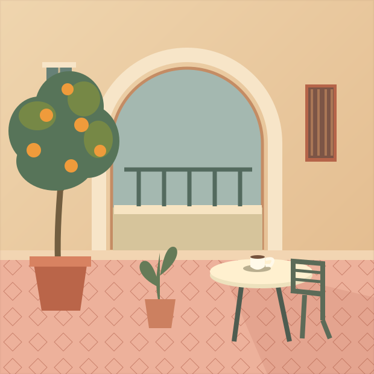

Кофе без переводчика
Попросить столик у окна, разобраться в меню и заказать то самое блюдо.
Для путешествий, новых знакомств и маленьких радостей. Три месяца, чтобы сделать испанский частью своей жизни.

Один кофе, пожалуйста.
Когда знаешь язык, даже обычная поездка превращается в личную историю.
Попросить столик у окна, разобраться в меню и заказать то самое блюдо.
Спросить дорогу, купить билет и понять простой ответ собеседника.
Рассказать о себе, увлечениях и планах — своими словами.
Одна понятная тема за другой.
Слушаем, разбираемся, пробуем говорить.
Предварительная программа. Итоговый состав и формат занятий уточняются перед записью.
Представьте: вы в маленькой кофейне в Мадриде. Бариста улыбается и ждёт ваш заказ.
МИНИ-УРОК · 1 МИНУТАКороткие объяснения и примеры из повседневной жизни.
Слова сразу складываются в реплики, вопросы и диалоги.
Возвращаемся к знакомому, чтобы новое оставалось с вами.
Да, предложенная программа начинается с алфавита, произношения и первых приветствий. Знание испанского для старта не требуется.
Три месяца, или 12 недель. Программа разделена на три последовательных модуля: знакомство с языком, бытовое общение и первые самостоятельные диалоги.
Цель программы — освоить базовые фразы для знакомства, кафе, города и путешествий. Результат зависит от регулярной практики; курс не обещает свободное владение за три месяца.
Нажмите «Хочу на курс», выберите цель обучения и отправьте подготовленное сообщение автору курса. Стоимость, даты старта и расписание уточняются перед записью.
Формат занятий и условия доступа автор уточнит перед набором. Оставьте запрос, чтобы получить актуальные подробности.
Начните с простого hola. А дальше — вместе.
Узнайте стоимость и ближайшую дату старта